A spa-like fall bathroom sounds like a project with a real budget attached.
It does not have to be, eight targeted changes, kept under a genuine $100 total, cover most of what actually creates that feeling.
This is the specific plan, not a vague inspiration list.
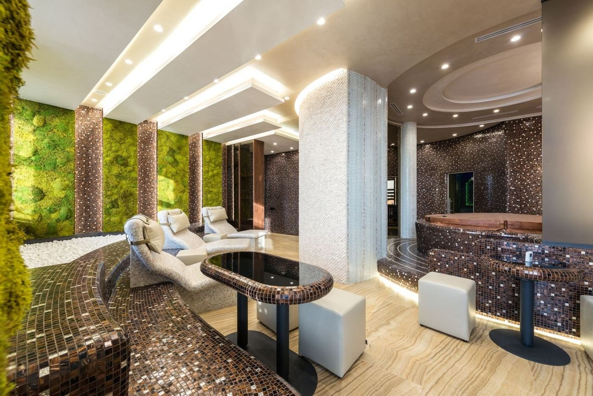
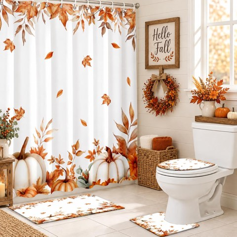
MEHOFOND 4 Piece Fall Shower Curtain Set, Watercolor Pumpkin Bathroom Decor
Shop on Amazon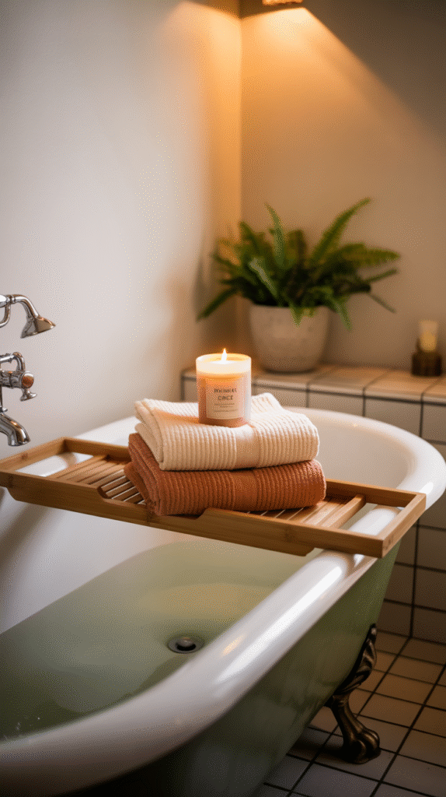
MEHOFOND 4 Piece Fall Shower Curtain Set, Watercolor Pumpkin Bathroom Decor
Shop on AmazonTerracotta Striped Bath Towels, Set of 2, Fall Bathroom Decor
Shop on AmazonKeeping the Cozy Going All Fall
Swapping the candle scent partway through the season, and keeping the counter styling tidy, extends the look well past the initial setup.
None of this requires repeating the full project, small maintenance keeps the initial investment looking fresh.
Breaking Down the Budget
Towels and a bath mat, a candle, a tray, and a few small decor pieces realistically land in the $60 to $90 range depending on what is already on hand.
Reusing existing items wherever possible, and saving the bulk of the budget for the one real upgrade in step 3, keeps the total comfortably under $100.
Eight Changes That Fit Under $100
1. Clean It Like It Matters
A genuinely deep clean, grout, fixtures, mirrors, makes every other change on this list look better than it would in a merely tidy room.
This is the one item on the list that costs nothing but time, and it is arguably the highest-leverage step of all.
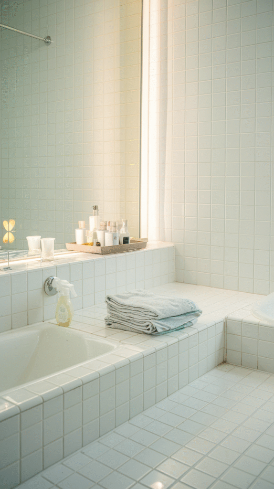
2. Add Cozy Details That Feel Intentional
A small basket, a seasonal touch on the counter, or a simple piece of art all add personality without much additional cost.
These final details are what separate a room that looks thrown together from one that reads as genuinely finished.
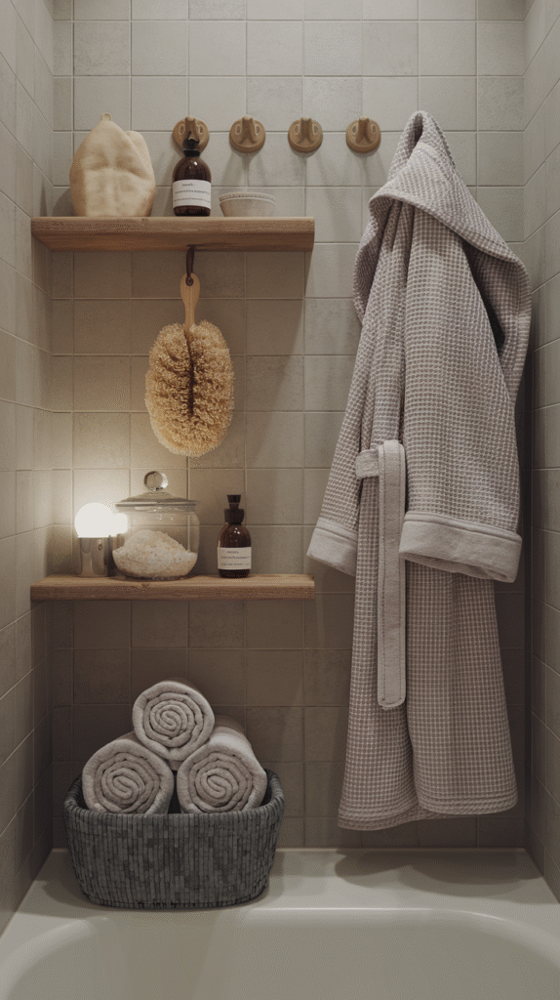
3. Upgrade One Real Element
Picking a single higher-impact upgrade, a new shower curtain, a nicer soap dispenser, and keeping everything else budget-friendly stretches the total further than spreading the budget evenly.
One genuinely nice item surrounded by budget pieces reads better than several mediocre items at the same total cost.
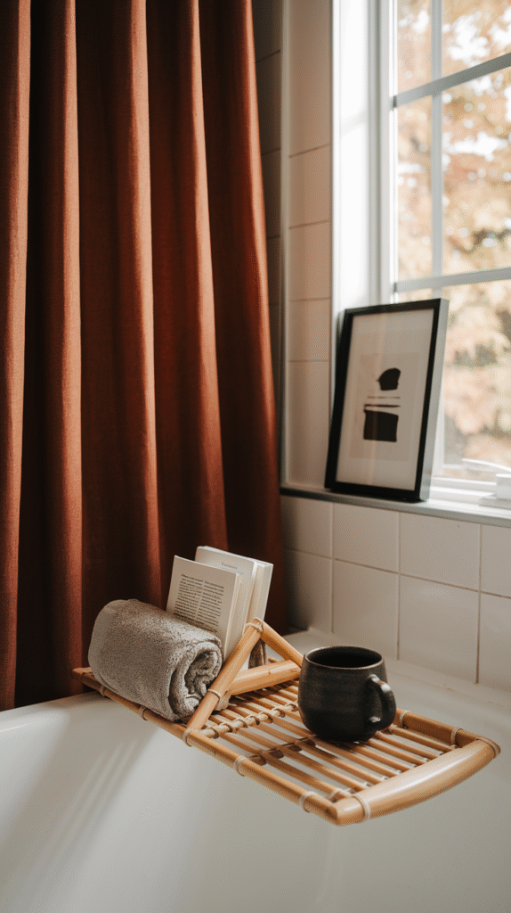
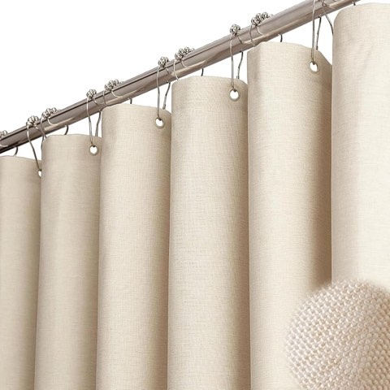
BTTN Beige Linen Textured Waterproof Cloth Shower Curtain, 72 x 72 Inch, Cream
Shop on Amazon
4. Style the Counter Like a Mini Spa
A simple tray holding a few bath products, arranged intentionally rather than left as clutter, turns the counter into a small styled moment.
This costs nothing beyond the tray itself, since it is mostly a matter of arranging what is already there.
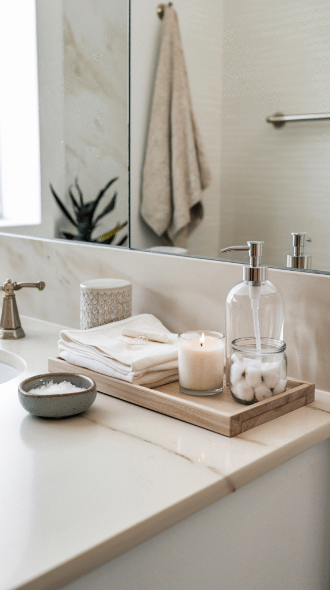

5. Use Natural Decor to Soften the Room
A small plant, a simple wood tray, or a few natural elements soften a bathroom's typically hard, cool surfaces.
This is a low-cost category, since many of these items can come from what is already around the house rather than a fresh purchase.
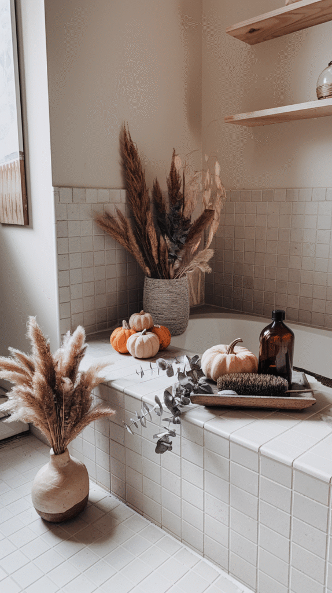
6. Bring in Fall Scents Properly
A single good candle in a warm, spiced scent does more for the spa feeling than several cheaper, less considered ones.
This is worth spending a bit more on relative to its small share of the total budget, since scent does a disproportionate amount of the atmospheric work.
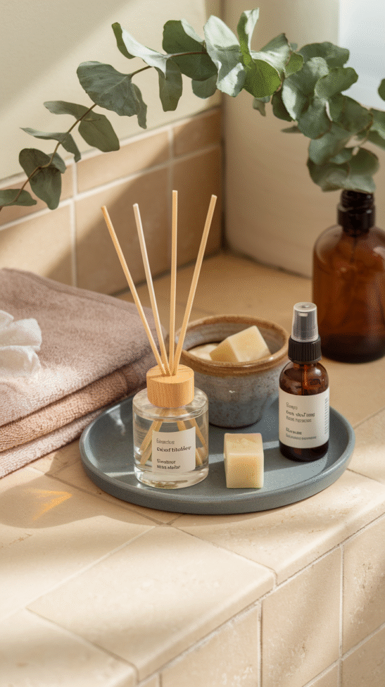
7. Add Warm, Ambient Lighting
A warm-toned bulb swap, or a small plug-in lamp if the room allows one, shifts the whole mood for the cost of a single bulb.
This is one of the cheapest items on the entire list relative to the difference it makes.
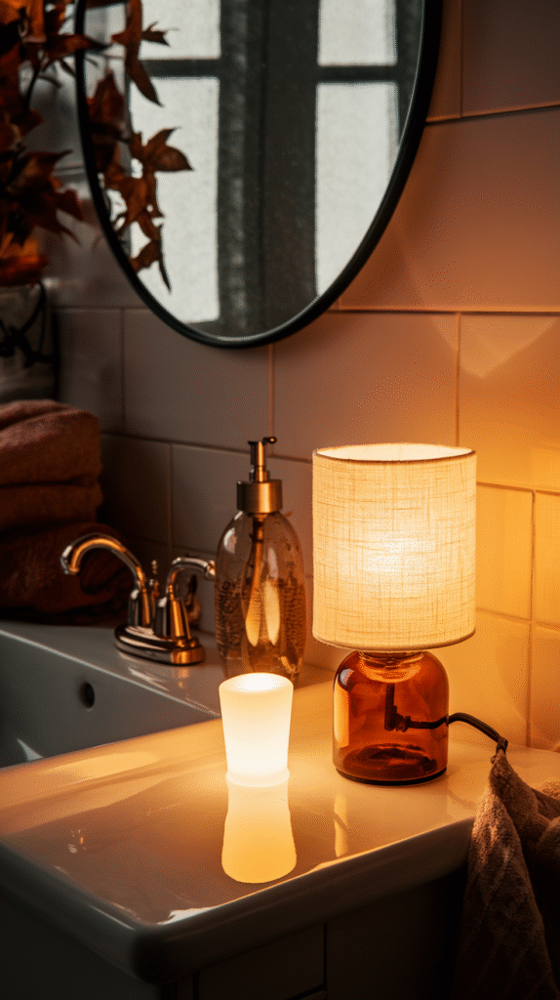
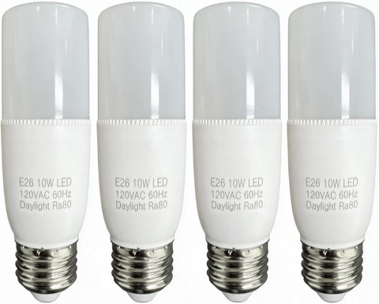
LED Replacement Bulbs, 10W (60W Equivalent), Soft White 2700K, E26, 4 Pack
Shop on Amazon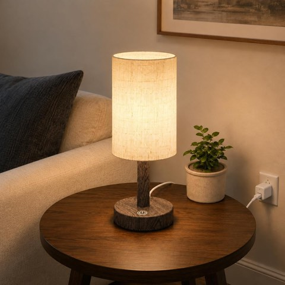
Small Plug-In Bedside Table Lamp with Touch Dimming, Dark Walnut Finish
Shop on Amazon8. Swap in Warm, Earthy Textiles
A new bath mat and a couple of towels in a warm, fall-appropriate tone do more for the room's feel than almost anything else on this list.
This is also one of the genuinely necessary purchases, towels wear out regardless, so this spend does double duty.
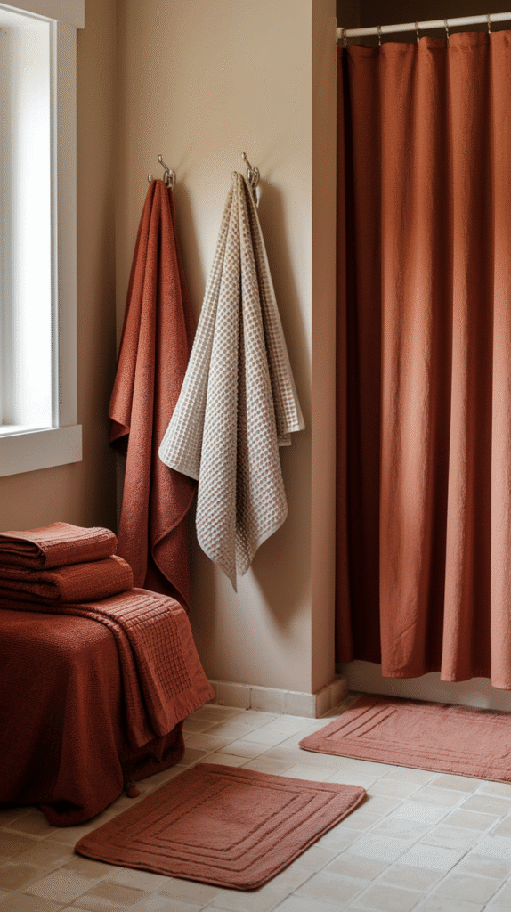
Final Thoughts
None of these 8 changes require a renovation-level budget or effort.
Start with lighting and scent, since both cost the least and change the most, then build out from there as the budget allows.
A genuinely spa-like fall bathroom is well within easy reach of a $100 weekend project.